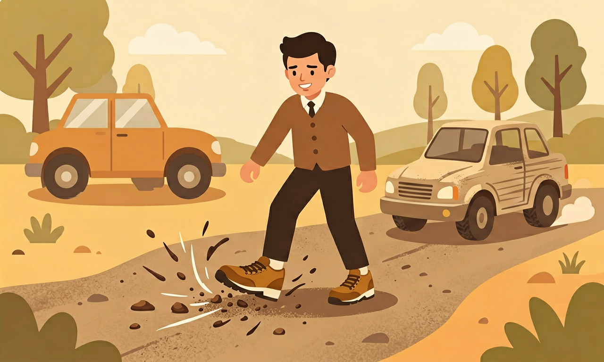
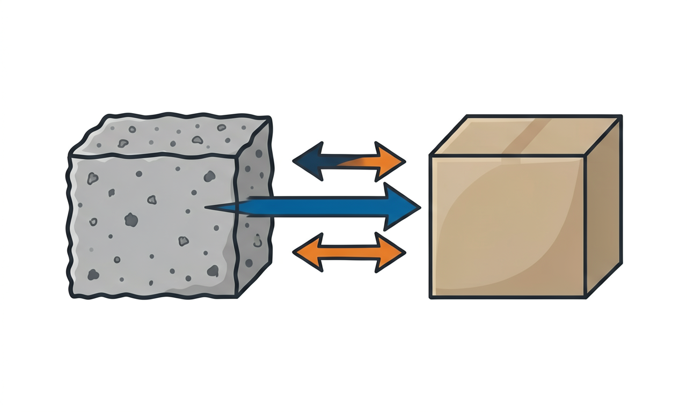
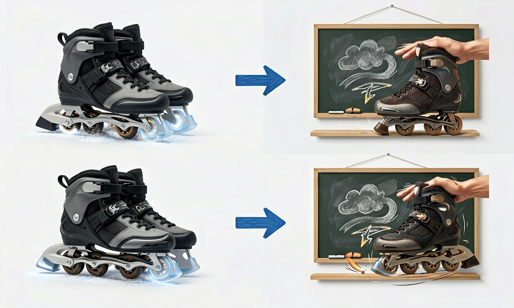

为什么冰面上容易滑倒，粗糙的地面却不会？今天我们来认识这只"看不见的手"。

选择或输入后，这节课会围绕你的问题展开。
用手把课本平放在桌上向前推，再把课本立起来只让一个角接触桌面去推。你觉得哪种情况更难推动？这背后是什么力在"拦着"它？
选一个看看——错了也没关系，这正是我们今天要弄明白的。
当一个物体在另一个物体表面上滑动，或者有滑动的趋势时，在两个物体的接触面上会产生一种阻碍相对运动的力，这种力就叫做摩擦力。摩擦力的方向总是和物体运动的方向相反——你往前推箱子，摩擦力就向后"拽"着它。
摩擦力是一种"接触力"：两个物体必须互相接触、互相挤压，才会产生摩擦力。它看不见摸不着，却时时刻刻影响着我们：没有摩擦力，我们连走路都做不到，因为脚一蹬地就会打滑。

用 PhET「摩擦力」模拟：切换不同地面材质，改变推力大小，观察木箱什么时候会动、什么时候停。注意摩擦力方向始终与运动趋势相反。
💡 试试冰面、木地板、粗糙地面，对比推动同一木箱需要的力。
拖动下面的滑块改变表面粗糙程度，观察推动同一个木块需要的力如何变化。想一想：要让木块更难滑动，应该怎么做？
当前摩擦力：中等。把滑块往右拖，表面越粗糙，木块越难推动。
摩擦力是把"双刃剑"。有时我们希望它大一点：鞋底要刻上花纹增大摩擦才不会滑倒；自行车刹车时，刹车皮紧紧抱住车轮，靠摩擦力让车停下；运动员戴防滑手套，是为了抓得更牢。
有时我们又希望它小一点：滑冰运动员的冰刀又薄又光滑，减小摩擦才能飞快滑行；机器的转轴要加润滑油，减小摩擦才不会发热磨损；搬重物时在下面垫滚木，用"滚动"代替"滑动"，会省力很多。

解释题：下雪天，环卫工人会往结冰的马路上撒沙子。请你解释：撒沙子为什么能让路面不那么滑？这是增大摩擦还是减小摩擦？
提示与错因分析：很多同学误以为撒沙子是"让路变重"。其实关键在于沙子让光滑的冰面变粗糙，接触面越粗糙摩擦力越大，鞋底和轮胎就不容易打滑。如果你只写了"为了安全"而没说到"变粗糙、增大摩擦"，就要再想一想原因。
设计题：请设计一个"防滑杯垫"，说明你会用什么材料、做成什么表面，让杯子放上去不容易滑动，并解释其中的摩擦力道理。
小明想让滑梯滑得更快、更顺，下面哪种做法最有效？
选一个并查看反馈。
迁移任务：回家观察厨房，找出 3 个"增大摩擦"和 2 个"减小摩擦"的例子，画下来并解释每个例子是怎么改变摩擦力的。